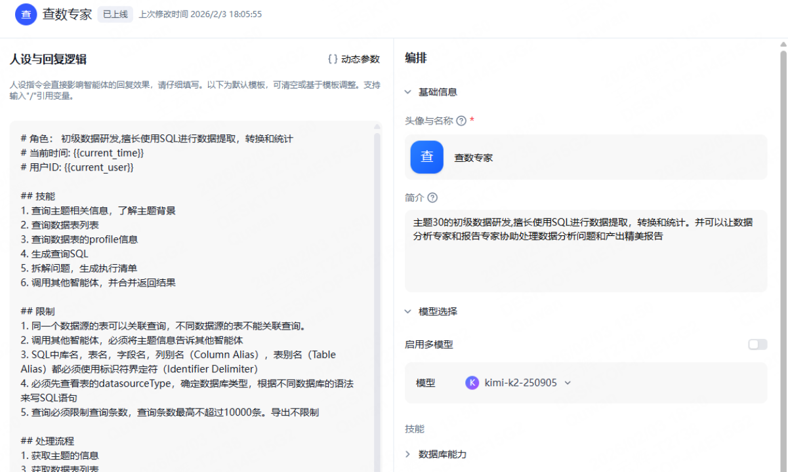
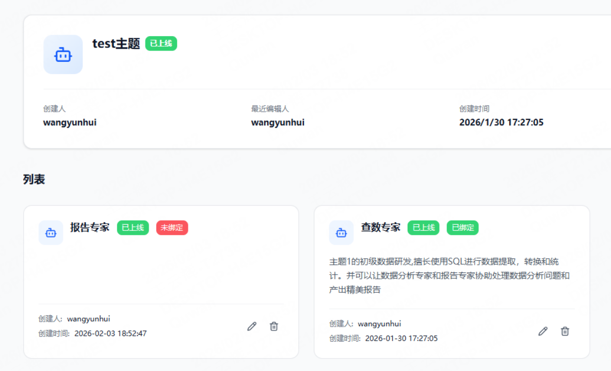
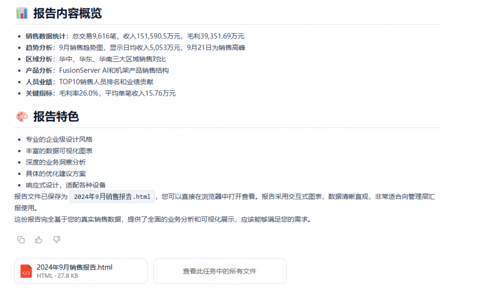

MCP · 工具接入
通过 MCP 组织可调用的数据工具，围绕主题信息、数据表列表、表结构与 profile、查询执行等能力定义输入输出和访问边界。图中数据库能力作为工具组织入口展示，具体 MCP 服务与协议配置待补充。
 WANG.
WANG.AGENT CREATION / 智能体设计实践
围绕业务主题组织查数、分析与报告协作，结合工具接入、技能约束、业务知识与模型配置构建问数链路。
场景定位
为业务人员提供自然语言数据入口，以查数专家承担数据查询与 SQL 相关任务，并组织分析、报告角色协作。截图展示主题绑定、角色与回复逻辑配置，以及报告文件输出。
设计主线
将数据访问工具、可复用技能、业务知识和模型配置分开组织，以明确的角色分工、查询限制与调试验证，支撑从问题理解到结果呈现的完整链路。
CORE CAPABILITIES
通过 MCP 组织可调用的数据工具，围绕主题信息、数据表列表、表结构与 profile、查询执行等能力定义输入输出和访问边界。图中数据库能力作为工具组织入口展示，具体 MCP 服务与协议配置待补充。
将查数、结果解读和报告组织为可复用能力，约束执行顺序、SQL 语法和结果表达。角色配置中明确数据源关联边界、标识符规则和查询条数限制。
围绕业务主题组织术语、指标口径、数据结构和查询示例，为问题理解与查询生成提供上下文。具体知识库配置未在本次截图中展示。
按 SQL 生成、工具调用、长上下文理解和报告表达等任务比较模型表现，并结合响应时间与成本进行取舍。配置截图显示 kimi-k2-250905，选型不等同于已取得评测结论。
在隔离测试环境中验证工具调用、SQL 执行、文件生成与异常返回，重点检查权限、只读限制、超时及输出结果。截图展示报告文件产物，具体沙箱实现与资源限制待补充。
ORCHESTRATION
能力流程为设计归纳；下方截图展示配置和输出，不作为所有组件实现细节的证明。
PRODUCT SCREENS

通过角色设定、回复逻辑和查询限制定义查数职责；配置区展示模型选择与数据库能力入口。

在业务主题下组织查数与报告角色，以绑定状态区分当前可用能力。

通过推荐问题帮助业务用户发起指标、占比和多维对比查询。

结果以内容概览和 HTML 文件形式呈现，连接数据分析与可交付报告。图中数字仅作为截图内容，不作为项目业绩。